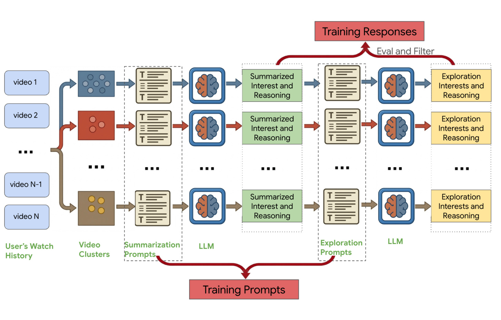
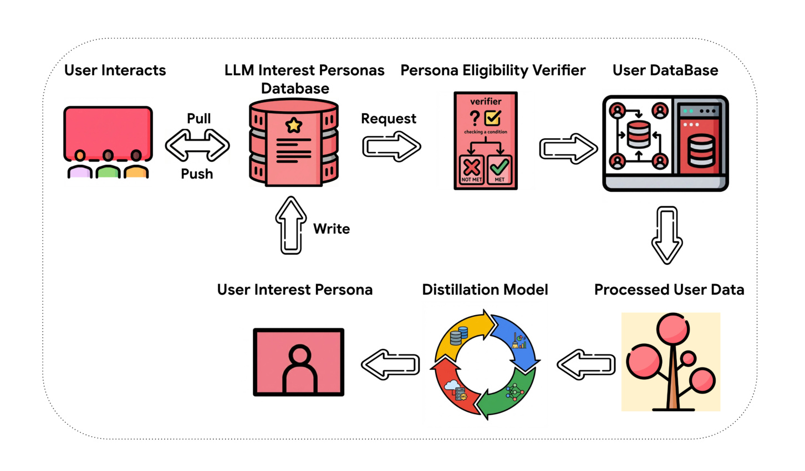
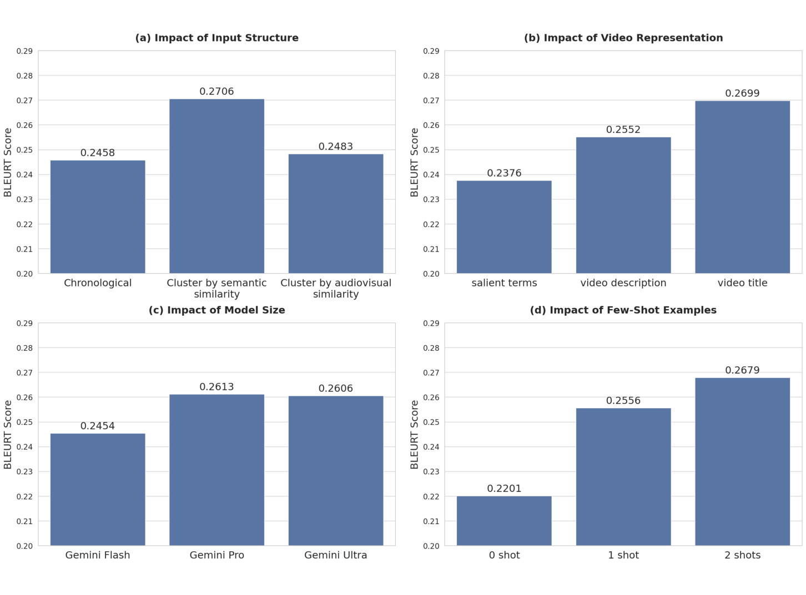
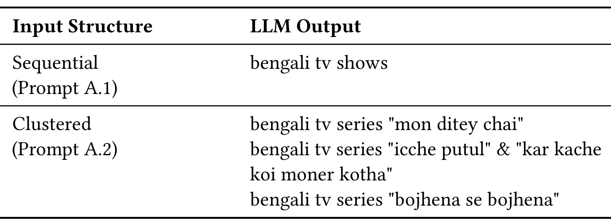
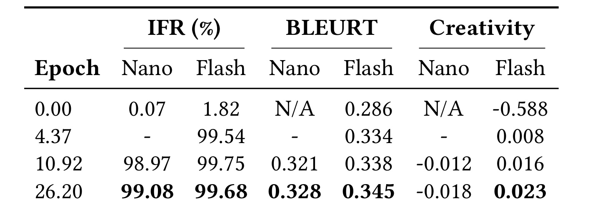
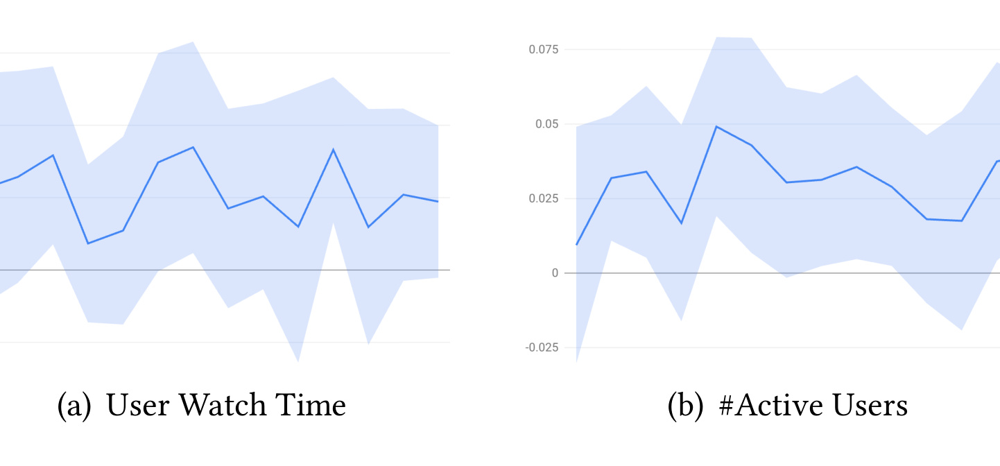

LLM-Based User Personas for Recommendations at Scale
这篇论文讨论的是在大规模商业视频推荐平台中，如何把 LLM 生成的自然语言用户兴趣画像接入在线推荐链路。一作 Haoting Wang 的 PDF 首页机构为 Google DeepMind，合作者主要来自 Google、Google DeepMind 与 GNucleus AI。论文入口为 arXiv:2606.12198。本文主类别归为推荐算法，副标签是 LLM4Rec，因为它不是把推荐问题包装成通用大模型评测，而是在真实推荐系统中把 persona 作为召回和探索信号来服务。
这篇工作最值得读的地方不在于“LLM 可以总结用户兴趣”这个结论本身，而在于它试图回答一个更工程化的问题：当用户规模达到十亿级、推荐请求有严格延迟预算、线上系统已有成熟 ID/embedding 召回和排序链路时，LLM 生成的文本画像到底放在哪里，如何生成，如何更新，如何过滤，如何证明它不只是离线看起来更聪明。论文给出的答案是把 LLM persona 设计成一种异步刷新、可缓存、可安全回退、可被既有召回模型消费的语义用户表示。
1. 背景和问题
推荐系统长期依赖 ID、embedding、序列模型和行为统计来表达用户兴趣。这类表示的优点是稳定、便宜、容易接入召回和排序链路，但缺点同样明显：它们对人类不可读，很难把“为什么用户可能喜欢某个主题”暴露出来，也很难主动跳出系统已经反复强化的反馈环。论文把这个矛盾放在视频推荐场景中展开：用户最近看过的视频可能覆盖若干主题，有些主题是已经被系统充分利用的偏好，有些则是可以被 LLM 推理扩展出来的邻近兴趣。传统模型可以根据相似 item 找相似 item，却不擅长把这些行为压缩成“用户喜欢孟加拉电视剧中的家庭情感线”这样可解释、可迁移、可用于探索的文本标签。
现有 LLM4Rec 工作已经证明，大模型可以从文本化用户历史中推断偏好，也可以通过 fine-tuning 执行排序、点击预测或序列生成任务。但论文指出，这些方案在工业落地时常有三类限制。第一，很多方法仍然让模型输出结构化 ID 或 cluster ID，以便兼容现有推荐基础设施，结果牺牲了自然语言语义，也失去了把兴趣展示给用户或给系统策略人员解释的机会。第二，许多 LLM 推荐方法运行在离线或近离线流程里，无法对用户当前访问时的状态做快速响应；如果只是在夜间批量预计算 persona，就很难捕捉短期兴趣的变化。第三，学术 benchmark 往往用户规模、噪声水平和链路复杂度都远小于商业视频平台，离线提升不等于能承受线上延迟和成本。
论文真正想解决的不是单点模型精度，而是 exploitation 和 exploration 的结构性冲突。summarized interests 负责利用已知偏好，帮助系统更准确地找到用户已经喜欢的主题；exploration interests 则利用 LLM 的世界知识和语义联想，围绕已知偏好生成新但相关的主题，给系统提供走出重复推荐的入口。如果只做摘要，persona 可能变成传统用户标签的自然语言版本，仍然把用户困在原来的兴趣泡泡里；如果只做探索，候选可能太发散，线上排序模型也未必愿意给它曝光。论文因此把两类兴趣放在同一次生成任务里，让 LLM 对每个用户历史簇同时输出已知兴趣和可探索兴趣。
这个问题在推荐链路中的难点还包括输入表示。视频历史通常是长序列，并且每个视频有标题、描述、上传者、显著词、视觉和音频 embedding 等多种信息。如果直接把用户最近看过的视频按时间顺序塞给 LLM，输入可能噪声大、重复多、语义密度低，模型只能生成非常粗的兴趣词；如果先用视频 embedding 聚类，得到的簇可能视觉上相似却不代表同一个抽象主题。论文最后选择基于 salient terms 的语义聚类，是因为这更接近 LLM 能理解的文本概念，也更容易生成自然语言兴趣标签。
从系统角度看，在线 LLM 推理还有一个硬约束：推荐请求不能等待大模型实时生成。论文没有宣称每次用户打开页面都同步调用 LLM，而是把 persona 设计成异步更新的服务。用户访问时，系统先查 persona 数据库；如果已有画像仍然有效，就直接用它参与下游推荐；如果缺失或过期，再触发后台生成。这个设计牺牲了一部分瞬时兴趣捕捉能力，却换来了低延迟和可扩展性。论文的贡献也正是在这里：它把 LLM persona 从一个离线分析结果，推进到一个能被大规模推荐系统消费的在线语义特征。
因此，这篇论文的定位应当是“生产级 LLM 用户建模框架”，不是单纯的 prompt engineering。它关心模型能不能总结，也关心输入如何聚合、教师数据如何筛选、小模型如何蒸馏、输出如何安全过滤、persona 如何接入召回、线上 A/B 如何证明价值。对于推荐算法读者，这篇工作提供的是一条把自然语言用户理解接入工业系统的路径；对于 LLM4Rec 读者，它提醒我们如果没有服务架构、成本预算和线上指标，很多漂亮的 LLM 推理能力仍然停留在离线展示层。
还有一个背景细节容易被忽略：论文并没有把自然语言 persona 只当成解释层。很多推荐解释工作是在排序结果已经产生之后，再为结果生成一句说明；这篇工作反过来，把自然语言兴趣放到候选生成之前，让它先影响系统会看见哪些 item。这个顺序差异很重要。如果 persona 只是解释，LLM 只能为既有系统的选择补充理由；如果 persona 是召回入口，它就有机会改变候选集合本身，尤其是把传统历史相似性不容易触达的探索主题送入下游排序。论文的线上实验之所以关注 exploration interests 的曝光差距和条件观看率，也是因为作者知道推荐系统的瓶颈不只在用户理解，还在候选能否获得展示机会。
2. 方法
2.1 语义聚类用户历史输入
论文的方法从用户历史表示开始。传统推荐系统可以直接使用 item ID 序列、user embedding 或短期行为窗口，但 LLM 需要的是可读、语义密度高、长度可控的输入。作者比较了两类聚类思路：embedding-based clusters 和 semantic-based clusters。前者基于视频的音频和视觉 embedding，适合捕捉外观、声学或感知层面的相似性，也适合大规模在线视频流的稳定聚类；但这些簇缺少明确语义，例如同样画面风格的内容未必属于同一兴趣主题。后者使用 Infinite Concept Personalized Clustering，把每个视频表示成 salient terms，并根据这些词的权重和相似度按时间顺序更新用户簇。
semantic-based clustering 的输入是视频标题、上传者、描述、相关视频标题和其他文本元数据训练出的 salient term annotation。每个 salient term 有一个 0 到 1 的 salience score，用来表示它与该视频的相关程度。算法遍历用户交互历史时，会把新视频的 salient terms 与已有簇的 centroid 做相似度比较：如果和某个簇足够接近，就更新这个簇；否则创建新簇；最后再剪掉视频数量不足的簇。这个流程的关键不是聚类算法本身有多复杂，而是把原本嘈杂的 watch history 变成少数主题簇，让 LLM 看到的是“若干语义组”而不是一串离散视频。
这种表示解决了两个问题。第一，它降低了 LLM 输入的噪声。一个用户可能连续观看很多同一剧集、同一赛事或同一教程，如果按时间顺序逐条输入，模型会被重复标题占据上下文；按语义簇输入后，模型更容易归纳成主题。第二，它保留了长期兴趣。论文指出，某些工业系统受离线表生成组合复杂度限制，只使用最近两条观看记录的 cluster label，这会导致长期偏好被忽略。这里的 long contextual watch history 和聚类输入结合起来，使 persona 能覆盖长期和近期兴趣，而不只是即时行为。
从服务角度看，语义聚类还承担了 token budgeting 的角色。LLM 输入越长，成本越高，延迟越不可控，输出也更容易被低价值重复内容牵引。把历史先压缩成少量语义簇，相当于把“哪些行为值得告诉 LLM”前置到传统数据处理层完成。这个前置步骤并不需要 LLM，每次用户行为更新也不必立即重跑 persona；系统可以先维护簇，再在满足资格和刷新条件时采样簇内代表视频标题。这样一来，LLM 看到的不是完整日志，而是经过推荐系统特征工程筛选后的用户兴趣证据。论文虽然没有把这部分写成独立公式，但它实际上决定了后续 persona 的上限：簇太粗会生成泛标签，簇太碎会让 LLM 重新面对噪声，簇的采样策略也会影响长期兴趣和近期兴趣的平衡。
本文没有可复用的核心公式；PDF 的方法部分没有写出训练目标、损失函数、打分函数或服务复杂度公式。文中只以自然语言提到 salient term 相似度、cosine similarity、BLEURT、Instruction Following Rate 和线上业务指标。这个选择本身也说明了论文的重心：它不是提出新的可证明优化目标，而是把已有表示、教师模型、蒸馏和线上架构组合成可服务的推荐系统模块。读这篇论文时，应该把变量关系理解成工程数据流，而不是期待一个新的 ranking loss。
2.2 摘要兴趣与探索兴趣的双目标生成
在得到结构化用户历史之后，LLM 被要求完成一个双功能任务。第一部分是 summarized interests，也就是对用户已有行为中的主题做简洁、可读的总结。它对应推荐系统中的 exploitation：如果用户长期观看某类内容，系统应该能更稳定地召回相关视频。第二部分是 exploration interests，也就是基于已知兴趣生成新但相关的主题。它对应推荐系统中的 exploration：如果用户喜欢某类电视剧，模型可能提出同一语言、同一题材、同一演员或相邻文化圈的主题，帮助系统发现传统相似 item 召回不容易触达的候选。
这两个目标必须放在同一个 persona 框架里。只做摘要会让系统继续强化用户已看过的内容，尤其在视频推荐中容易形成重复曝光；只做探索又可能引入过宽的主题，增加下游排序模型拒绝曝光的概率。论文的设计让 LLM 在总结用户历史时同时给出推理链路和探索兴趣，之后再通过评估过滤和蒸馏把这个能力转移到小模型。这样做的一个隐含优势是，探索不是随机扩展，而是围绕用户已有兴趣簇展开的语义延伸。
从输入输出角度看，用户历史簇进入 prompt 后，教师模型先生成 summarized interest and reasoning，再生成 exploration interest and reasoning。reasoning 在训练数据构造中很重要，因为它让教师模型的判断更可审核，也方便过滤低质量样本；但在最终线上服务中，系统真正消费的可能是兴趣短语本身，而不是完整解释。论文没有把 persona 当作用户可见页面的唯一用途，而是强调它能进入 retrieval。也就是说，自然语言文本既可以被人读，也可以被编码进召回模型，成为候选生成的查询侧语义信号。
这里还要注意一个推荐系统视角的边界：LLM persona 不是替代整个排序系统。它更像新增的召回来源或用户兴趣特征。传统召回和排序仍然负责大规模候选过滤、业务约束、多目标权衡和安全策略。LLM 的价值在于给系统提供更高层的语义查询，尤其是传统 ID-based 模型难以主动构造的探索主题。论文后面的线上结果也显示，探索兴趣带来的 item 曝光更少，但一旦展示给用户，被观看的概率更高，这说明瓶颈可能转移到了下游 ranking 对新颖候选的信任和曝光分配上。
双目标生成还要求输出格式足够稳定。summarized interest 和 exploration interest 如果没有固定数量、固定字段和可解析边界，下游就很难把它们分别接入召回、监控和安全策略。论文把 Instruction Following Rate 单独作为蒸馏指标，说明作者把“能否按 schema 生成”视为生产可用性的核心条件。对研究读者来说，这个指标可能不如 BLEURT 或线上 lift 吸引人；但对服务系统来说，格式错误会直接导致 persona 丢弃、召回空结果、解析失败或额外人工规则。也正因为如此，教师阶段保留 reasoning 是为了让训练数据更可靠，而线上 student 阶段更需要稳定、短小、可消费的兴趣标签。
PDF 附录把这个 schema 写得比正文更清楚。Prompt A.1 是顺序历史版本，英文骨架可以概括为：the model is a multilingual video-topic summarizer; given watched video metadata, output [Group k]: **<Summarized Interest k>**: <Reasoning k>。中文理解是：输入不是用户 ID 或 embedding，而是一串按时间排列的视频元数据；输出必须按组编号，每组先用 **...** 包住兴趣短语，再给出为什么这些视频支持该兴趣的解释。这个 prompt 的价值主要在离线对照：它证明“直接按时间顺序喂标题”会得到更宽泛的兴趣，例如只总结成孟加拉电视剧，而不是具体剧集或细分主题。
Prompt A.2 是聚类历史版本，也是论文离线实验里更重要的实现设定。英文骨架可以概括为：given a few groups of watched videos, summarize the interest for each group and explain why; each output line keeps the same [Group k] structure. 中文理解是：系统先把用户历史压成若干语义簇，再让 LLM 对每个簇分别生成摘要兴趣。这里的“group”不是随便排版，而是服务实现的边界：每个 group 对应一个可单独解析、存储、过滤和召回的兴趣单元。如果用户有 4 个有效语义簇，输出就应当有 4 个 summarized interests；如果某个簇被过滤或低质量，后续可以只丢弃那一组，而不必废掉整个用户画像。
Prompt B.1 则把线上 serving 需要的双目标合并到一个统一格式中。英文骨架可以概括为：Task 1 summarizes each group with **interest** and reasoning; Task 2 generates three relevant but novel exploration interests, wrapped by &&...&&。中文理解是：对每个语义簇，模型先产出一个“利用型”摘要兴趣，再围绕这个摘要兴趣生成 3 个“探索型”兴趣；**...** 和 &&...&& 是机器可解析的分隔符，分别告诉下游这是 summarized interest 还是 exploration interest。这个设定解释了为什么论文要报告 Instruction Following Rate：只要模型少生成一个探索项、忘记 &&、或把解释和兴趣混在一起，召回侧就无法稳定区分 exploitation query 与 exploration query。
从实现角度看，附录 prompt 暗示了一条更完整的数据结构。一次生成的 persona 可以被整理成以 user_id 为主键、按 persona_version 管理、内部包含 groups 数组的记录；每个 group 至少包含 group_id、source_video_titles、summarized_interest、summary_reasoning、exploration_interests[3]、generation_time、model_version、safety_status 和 ttl。摘要兴趣进入稳定偏好召回，探索兴趣进入新颖候选召回或探索流量桶，reasoning 更适合用于离线审核、训练数据过滤和问题排查，而不一定直接进入线上 retrieval。这样理解后，Prompt B.1 就不是普通 prompt engineering，而是把 LLM 输出约束成推荐系统可以消费的 schema。
这也解释了论文的 teacher-student 设计。教师阶段可以把任务拆成多步 reasoning：先让大模型对每个 group 找摘要兴趣和理由，再让它基于摘要兴趣扩展 exploration topics，最后过滤格式、数量和安全性都合格的样本。学生模型阶段则学习统一 Prompt B.1 的端到端输出，因为线上服务更需要一次调用完成双目标生成。换句话说，训练数据生产时追求可审核和高质量，线上推理时追求低成本和 schema 稳定；附录 prompt 正好对应这两个阶段之间的接口。
2.3 多步教师数据收集与蒸馏
直接在线服务大模型成本过高，所以论文使用知识蒸馏。教师模型承担高质量推理和数据生成，小模型承担实际在线推理。训练数据收集不是简单把用户历史喂给教师然后全量保留，而是一个多步过滤流程：先随机采样数万名合格用户及其观看历史，限定用户必须同意数据使用、有足够近期高满意度观看事件，并移除不安全或敏感视频；再把输入组织成 semantic clusters；随后用教师 LLM 生成摘要兴趣和探索兴趣；接着对生成结果做评估和过滤；最后把合格 response 划分为 80% 训练集和 20% 评估集。

Figure 1 展示了这个训练数据构造链路。左侧是用户观看历史，先被拆成 video clusters，然后进入 summarization prompts 和教师 LLM，得到 summarized interest and reasoning；接着再进入 exploration prompts 和第二段教师推理，得到 exploration interests and reasoning。图中上方的 Eval and Filter 表示这些 response 不会直接成为训练数据，而是要经过质量过滤；下方的 Training Prompts 则说明训练样本不仅包含最终兴趣，还保留了 prompt 结构。这个图的关键点是“多步 reasoning 不是线上负担，而是离线教师数据质量控制手段”。线上 student model 学到的是经过筛选后的双目标行为，而不是每次都运行完整教师推理。
蒸馏在这里有两个作用。第一，它把大模型的语义推理能力压缩到可部署模型中。论文在实验中比较 Gemini Flash 和 Gemini Nano，说明小模型通过训练可以快速学会输出格式并逐步提升摘要质量。第二，它让系统可以统一生成 summarized interests 和 exploration interests，而不是分别训练两个模型或维护两个服务。统一 prompt 和统一输出格式对工业系统很重要，因为下游解析、存储、安全检查和召回接入都依赖稳定 schema。
蒸馏数据的采样条件也值得单独看。作者只选择同意数据使用、近期有足够高满意度观看事件的用户，并移除 unsafe 或 sensitive videos。这不是普通的数据清洗，而是在定义 teacher 要学习的行为边界。高满意度事件让 persona 更贴近正反馈兴趣，避免模型把误点、短暂停留或负反馈内容当成偏好；敏感内容过滤则降低 persona 触发安全策略的概率。对工业系统而言，训练数据中的边界会被 student model 放大，如果教师样本里混入大量低质量或敏感历史，后续再靠线上 safety classifier 补救会很被动。
论文没有详细披露完整 prompt 和过滤规则的所有实现细节，但从流程可以推断，质量控制至少包含三层：输入层过滤不合格用户和敏感历史，教师输出层过滤不合格 response，线上输出层再用 safety classifier 过滤 persona 文本。这种多层防护对自然语言用户画像尤其必要，因为 persona 可能涉及敏感属性、隐私推断或不适合展示的兴趣描述。如果只追求模型生成质量而忽略安全回退，LLM persona 很难进入真实平台。
如果把 Figure 1 和 Prompt B.1 合起来看，训练样本大致可以理解为“结构化 prompt + 结构化 completion”。prompt 侧包含若干 [Group k]，每组带代表性视频标题或视频元数据；completion 侧包含同样的 group id、一个 **summarized_interest**、一段 reasoning，以及三个 &&exploration_interest&&。过滤规则至少会检查四类东西：group 数量是否对齐、每组是否有 Task 1 和 Task 2、探索兴趣数量是否为 3、分隔符和字段顺序是否可解析。通过这些规则后，样本才适合蒸馏，否则 student 学到的会是不可消费的自然语言长答。
线上实现时还需要把自然语言输出拆成多路特征。一个可行的链路是：student model 生成原始文本后，parser 先按 [Group k] 切块，再用 **...** 抽取摘要兴趣，用 &&...&& 抽取探索兴趣；schema validator 检查数量和空值；safety classifier 分别检查摘要兴趣、探索兴趣和可能保留的 reasoning；通过后写入 persona database。推荐召回侧不需要读取完整长文本，只读取已经结构化的兴趣短语和版本字段。这样能把 LLM 生成失败控制在 persona 更新流程中，而不是让失败扩散到每次推荐请求。
这个实现细节也能解释为什么论文把异步更新和蒸馏放在同一个系统里。若每次请求同步调用教师模型，一旦 prompt 输出格式不稳定，推荐请求就要承担解析、重试和安全过滤成本；异步 student 服务则可以在后台失败、重试或回退到旧 persona。也就是说，prompt schema、parser、validator、safety classifier、persona TTL 和 fallback 共同构成了 UserPersonas 的生产化实现，而不是单靠一个 LLM prompt。
2.4 异步在线推理与成本控制
线上架构是论文的核心工程贡献之一。作者没有把 LLM 当作同步推荐特征服务，而是设计了异步 persona 生成管线。当用户访问平台时，系统先查询 LLM Interest Personas Database。如果数据库里存在有效且未过期的 persona，就直接拉取并交给下游推荐模块；如果不存在或已经 stale，系统通过 Persona Eligibility Verifier 判断用户是否满足生成条件，再从 User Database 读取并处理用户数据，触发 Distillation Model 生成新的 User Interest Persona，最后写回数据库。当前请求不必等待这个生成过程完成。

Figure 2 的信息流可以拆成两个环。上半部分是用户交互与 persona 数据库的读写：用户请求先 pull 已有 persona，必要时 push 或触发更新。右侧 verifier 和 user database 负责判断是否有资格生成、以及准备处理后的用户数据。下半部分是后台生成环：processed user data 进入 distilled model，产出 user interest persona，再 write 回数据库。这个设计的好处是把 LLM 推理从实时请求路径中剥离出来，使 persona 成为“可缓存的推荐特征”，而不是“必须同步计算的推荐结果”。
成本控制还包括输入预处理、模型量化和更新频率调节。论文要求用户必须有足够的 qualified watch events，说明并非所有用户都值得或适合生成 persona；它还移除用户主动负反馈的视频，以免把不喜欢的内容当成兴趣。用户历史会被聚成少数簇，并从每个簇采样少量视频标题作为输入，从而降低 token 成本。异步架构天然存在 stale persona 风险，作者的处理方式是把 update frequency 和 recency window 做成可调参数，让系统根据业务目标在成本、延迟和新鲜度之间折中。
这个架构给推荐系统的启发是，LLM 特征不一定要实时同步算。很多高成本语义特征可以通过缓存、异步刷新、资格过滤和回退机制进入生产。如果 persona 过期，系统可以继续用旧 persona 或既有推荐链路；如果新 persona 被安全分类器拦截，系统也可以回退到之前安全合格的 persona。这种 graceful degradation 是论文与离线 LLM 推荐研究的重要区别。
异步架构的代价是新鲜度不完美。论文承认 asynchronous inference 会影响 transient sudden interests 的捕捉，因此把更新频率和 recency window 做成可调。这个选择反映了推荐系统中的常见权衡：实时性不是越强越好，尤其当实时生成成本很高、输出需要安全过滤、下游召回又要稳定时，过度频繁刷新可能带来噪声和成本，而不是收益。更合理的做法是根据用户活跃度、兴趣变化速度和业务场景设置不同刷新策略。例如 casual users 可能从长期 persona 中获益更多，高活跃用户则可能需要更短的窗口和更频繁的更新。论文没有展开这种分层策略，但线上结果显示 casual users 提升更明显，这为后续做用户分层刷新提供了线索。
2.5 安全过滤与推荐召回接入
LLM 输出自然语言 persona 后，论文先用 safety classifier 检测潜在不安全或敏感兴趣文本。如果新 response 被标记，系统会回退到用户此前安全且合格的 persona。这一步不是附属功能，而是用户画像系统的上线前提。自然语言画像可能比 embedding 更容易暴露敏感推断，例如健康、政治、宗教、未成年人兴趣或其他平台不希望直接使用的属性。即便这些推断来自观看行为，也不意味着它们适合作为推荐查询或用户可见标签。
通过安全过滤后，persona 需要被转化为候选召回信号。论文探索了两种 retrieval 选项。第一种是 conventional two-tower model：query tower 编码 LLM-generated persona，item tower 编码候选视频，然后通过共享空间中的相似度召回。第二种是 transformer-based sequential model 加 restricted nearest neighbor search。作者最终采用后者，理由是可以复用生产中已经高度优化的 sequence models，并避免为 persona 查询从零搭建独立召回系统。这个选择很现实：在工业推荐里，新特征是否有效不仅取决于模型理论，也取决于它能否接入已有高性能检索栈。
这里的“复用既有召回模型”还有一层含义：persona 文本必须被翻译成系统已经信任的向量空间或检索接口。自然语言兴趣本身不能直接成为候选，必须经过 query encoder、序列模型或其他语义检索模块映射到 item 空间。这个映射会决定 persona 的实际影响范围。如果 query encoder 对某些语言、长尾主题或文化实体理解不足，LLM 生成得再精细也可能召不回合适 item；如果 restricted nearest neighbor search 过窄，探索兴趣会被限制在熟悉内容附近；如果过宽，又可能增加低质候选。论文没有披露这些检索参数，但它把 persona 放在 retrieval 而不是 final ranking，说明作者希望先扩大候选视野，再让成熟排序系统做多目标权衡。
persona 进入召回后，summarized interests 和 exploration interests 的作用不同。摘要兴趣更像高置信的用户偏好标签，召回出的内容与已有行为更接近；探索兴趣更像受控的新主题查询，召回出的内容可能更少获得排序曝光，但如果被展示，可能带来更高的观看概率。论文的线上分析证明了这一点：exploration interests 检索出的 item 曝光比 summarized interests 少 40.91%，但在被展示条件下被观看概率高 13.6%。这说明探索候选并不是低质，而是下游排序系统可能仍偏向熟悉、近期、高置信内容。
方法整体可以总结为一个闭环：用语义簇压缩用户历史，用教师 LLM 生成双目标 persona，用过滤和蒸馏获得可服务的小模型，用异步架构把 persona 缓存到数据库，用安全分类器控制输出风险，再用既有召回模型把自然语言兴趣映射回视频候选。这个闭环的每个环节都服务于同一个目标：让 LLM 的高层语义理解成为推荐系统可规模化消费的信号，而不是停留在离线解释或人工分析层。
3. 实验结果
3.1 离线表示选择
论文首先评估用户历史表示对 persona 质量的影响。实验用数百名用户和他们点击过的文本 topic 构造 ground truth，把 LLM 生成的 summarized interests 与 ground truth clicked texts 做 BLEURT 比较。作者改变了三类因素：视频表示使用 title、description 还是 salient terms；输入结构是 chronological order 还是 semantic / audiovisual clusters；prompt 是否包含 few-shot examples。Figure 3 汇总了四个维度的离线结果。

Figure 3(a) 显示，按 semantic similarity 聚类的输入 BLEURT 为 0.2706，高于 chronological 的 0.2458 和 audiovisual similarity cluster 的 0.2483。这是论文选择语义聚类的直接证据。Figure 3(b) 显示 video title 的 BLEURT 为 0.2699，高于 video description 的 0.2552 和 salient terms 的 0.2376，说明在这个任务里标题提供了更集中、更适合 LLM 归纳的信号。Figure 3(c) 显示 Gemini Pro 和 Gemini Ultra 明显优于 Gemini Flash，但 Pro 到 Ultra 提升很小，提示教师模型能力存在边际收益平台。Figure 3(d) 显示 two-shot prompt 达到 0.2679，高于 one-shot 的 0.2556 和 zero-shot 的 0.2201，说明示例能稳定输出格式和语义粒度。
离线结果有两个值得注意的解释。第一，semantic cluster 优于 chronological，不代表时间顺序无用，而是说明在生成自然语言兴趣摘要时，主题结构比原始顺序更重要。推荐排序仍然需要 recency 和 sequential pattern，但 persona 生成更需要语义归纳。第二，title 优于 description 和 salient terms，可能是因为标题更接近用户实际感知的视频主题，description 太长且噪声更大，salient terms 虽然结构化但可能缺少自然语言上下文。这个结果提醒我们，LLM 输入不一定越多越好，语义密度和可读性更关键。

Table 1 给出一个直观例子。顺序输入 Prompt A.1 只生成了 “bengali tv shows” 这样宽泛的兴趣；聚类输入 Prompt A.2 则生成了 “bengali tv series mon ditey chai”、“icche putul / kar kache koi moner kotha”、“bojhena se bojhena” 等更具体的剧集主题。这个样例支撑了论文的核心主张：如果输入结构保留了语义簇，LLM 不只是给出泛化标签，而能生成更细的兴趣短语。对推荐系统来说，细粒度 persona 更容易作为召回 query；宽泛 persona 虽然安全，但召回空间太大，容易被排序阶段稀释。
这个例子还说明，persona 的质量不能只看标签是否“正确”，还要看它是否可操作。泛化的 “bengali tv shows” 能表达大方向，却不足以区分具体剧集、叙事风格和相邻探索主题；更具体的剧名标签则可以连接到内容索引中的实体、标题、频道和相关视频簇。对召回系统而言，后者能形成更清晰的 query intent，也更容易做去重和多样性控制。
3.2 蒸馏模型表现
在确定输入表示后，论文评估 student model 的蒸馏效果。指标包括 Instruction Following Rate、BLEURT 和 Creativity Score。IFR 衡量模型是否完整执行摘要和探索任务、遵守格式并生成正确数量的兴趣项；BLEURT 衡量 student summary 与 teacher reference 的语义接近；Creativity Score 使用 side-by-side LLM autorater 比较 student 与 teacher 的 summarized/exploration interest pair，关注探索输出的创造性。

Table 2 展示了 Gemini Nano 和 Gemini Flash 在多个 checkpoint 的表现。epoch 0 时，Nano 的 IFR 只有 0.07%，Flash 也只有 1.82%，说明未蒸馏的小模型几乎不能稳定遵守工业输出格式。训练到 epoch 4.37 后，Flash 的 IFR 已到 99.54%，但部分指标仍未覆盖；到 epoch 10.92 和 26.20，Flash 的 IFR 保持在 99.75% 和 99.68%，BLEURT 从 0.338 提升到 0.345，Creativity 从 0.016 提升到 0.023。Nano 在后期也达到接近 99% 的 IFR，BLEURT 到 0.328，但 creativity 仍略弱。
这张表说明蒸馏的第一收益是格式可靠性，而不是一开始就提升语义质量。对于线上服务，格式遵循率非常关键，因为下游解析、存储和召回都依赖固定输出。如果模型偶尔漏掉 exploration interests，或把 reasoning 与 label 混在一起，系统成本会直接上升。BLEURT 和 Creativity 的持续改善则说明训练不只是让模型学会模板，还在逐步吸收教师模型的语义判断。Flash 相比 Nano 的优势也比较符合上线取舍：它比大教师便宜，但比更小模型更能保留摘要和探索能力。
3.3 用户满意度与人工感知
论文还做了用户调研，用来确认 LLM 生成的兴趣标签是否被用户认为准确、有吸引力。调研对象是美国地区、上一周活跃的视频平台用户。系统先把参与者近期观看历史聚成语义簇，然后让 LLM 为每个簇生成 interest label；调研时随机选择一个簇，展示三个代表视频和对应 label，让用户从 Accuracy 和 Preference 两个角度用五点 Likert scale 打分。Accuracy 问的是这个 interest label 是否贴近这些视频主题，Preference 问的是用户是否愿意看更多相关视频。
结果显示，超过 80% 的受访者认为 LLM-generated label 对观看历史的总结达到 “Very Closely” 或 “Extremely Closely”；71% 的用户对继续观看相关主题表达强兴趣。论文还把 LLM persona 与传统 extractive methods 做比较，认为 LLM 标签在感知质量上优于简单抽取式方法。这个结果对推荐系统很重要，因为 persona 如果只是离线指标好，却无法被用户认同为“确实代表我”，它在可解释和用户可见功能中的价值就会下降。
不过，用户调研也有边界。论文没有披露全部问卷分布、样本分层细节和不同用户群体的方差，也没有说明用户是否会因为看到熟悉视频而倾向于认可标签。因此这个调研更适合作为质量背书，而不是严格证明 persona 能独立改善长期留存。真正的业务效果仍需要线上 A/B 来验证。
3.4 线上实验
线上实验在一个服务十亿级用户的商业视频推荐平台上进行，control arm 使用既有生产推荐栈，不接入 LLM persona；experiment arm 把 video titles 作为元数据，通过 LLM-generated interests 召回候选视频。实验持续超过 30 天，用户流量不重叠。论文报告了若干 viewer value 相关指标，包括 watch time、active users、用户活跃度分层，以及 summarized interests 与 exploration interests 的差异。

Figure 4 展示了 watch time 和 active users 两个线上指标随时间的提升趋势。论文正文写明，Figure 4(a) 对 watch time 的 lift 为 +0.04%，统计显著；Figure 4(b) 对 active users 的 lift 为 +0.03%，也达到统计显著。单看数值，这些提升并不夸张，但在高度优化、十亿级用户平台上，小幅显著提升通常已经有业务意义。更重要的是，提升来自新增语义召回源，而不是大规模重写排序模型，这说明 persona 可以作为相对模块化的增量能力接入。
论文还报告了 casual users 和 core users 的差异：满意观看时间的主要提升来自 casual users。作者给出的解释是，LLM persona 能减少重复看到同一批高分兴趣的情况，并抵消生产系统的强 recency bias，从而把 dormant long-term interests 重新带回候选池。这个解释与方法设计一致：semantic clusters 覆盖长期历史，exploration interests 负责生成相邻主题，异步 persona 提供可复用语义查询。
最有洞察的是 summarized interests 与 exploration interests 的对比。论文指出，exploration interests 检索出的 item 比 summarized interests 少 40.91% 曝光，说明下游排序模型对新颖候选仍较保守；但在被展示的条件下，这些 item 被观看概率高 13.6%。这组结果表明 exploration persona 的候选质量并不低，问题可能是排序模型没有充分给它展示机会。换句话说，LLM persona 已经发现了一些用户可能喜欢但传统系统不愿曝光的内容，下一步瓶颈可能在多目标排序、探索流量分配和 novelty calibration。
总体看，实验链条比较完整：离线 BLEURT 证明输入结构选择，定性表格证明输出细粒度，蒸馏表格证明 student model 能学会格式和语义，用户调研证明用户感知质量，线上 A/B 证明生产指标有提升。它的不足是商业平台细节和指标口径无法完全公开，很多关键数字被概括为 viewer value 或相对 lift，读者无法复现实验。但作为工业论文，这已经给出了足够清晰的证据链来说明该框架不是纯 prompt demo。
4. 总结
4.1 我的判断
这篇论文的价值在于把 LLM4Rec 从“LLM 能不能理解用户历史”推进到“LLM 生成的自然语言用户理解如何进入生产推荐系统”。它没有提出新的损失函数，也没有在公开数据集上刷新 benchmark，而是把语义聚类、教师生成、蒸馏、异步缓存、安全过滤和既有召回模型串成一条可上线链路。对工业推荐来说，这种系统论文往往比单点模型论文更有参考价值，因为真正的难题是成本、延迟、稳定性、回退和线上指标。
4.2 工程启发与复现建议
如果要复现这类思路，第一步不是直接让 LLM 读完整用户历史，而是先构造可控的语义簇输入，并评估 title、description、tag、salient terms 哪种表示最适合本平台。第二步要把 summarized interests 和 exploration interests 分开评估，避免探索主题被摘要质量掩盖。第三步要尽早设计输出 schema、安全分类器、persona TTL、刷新频率和 fallback；这些系统字段会决定 persona 能否进入线上请求链路。第四步是把 persona 当作召回 query 或用户特征接入已有模型，而不是指望它替代排序器。第五步要单独分析 exploration 候选的曝光和条件观看率，因为新颖候选很可能不是质量差，而是被排序阶段压制。
4.3 局限与后续跟进
局限至少有四点。第一，论文没有公开完整 prompt、过滤规则和安全分类器细节，外部复现很难做到同等质量。第二，线上指标是商业平台内部口径，虽然有统计显著性，但无法判断不同内容域、国家和用户群体上的稳定性。第三，异步 persona 会带来 stale interest 问题，尤其对突发短期兴趣敏感的场景可能不够及时。第四，exploration item 曝光显著低于 summarized item，说明下游排序系统仍可能抵消 LLM 探索带来的候选增益。第五，自然语言 persona 涉及隐私和敏感属性推断，论文只说明使用 safety classifier 和回退，没有展开误杀、漏杀和用户控制机制。
后续我会重点跟三条线。第一，看 Google 或其他平台是否继续公开 persona TTL、更新频率和 ranking calibration 的设计，因为这是探索候选能否真正释放的关键。第二，看 LLM persona 是否会从召回 query 扩展到解释、用户可编辑兴趣、冷启动 onboarding 等用户可见功能；如果用户能修正 persona，反馈闭环会更完整。第三，看 student model 是否可以进一步被小型专用模型或检索增强模板替代，从而降低推理成本。第四，看这种方法在电商、音乐、短视频、新闻等不同推荐域是否需要不同的安全和探索策略。整体而言，这篇论文证明了自然语言用户画像不是装饰性解释，而可以成为大规模推荐系统中的一类生产语义信号。